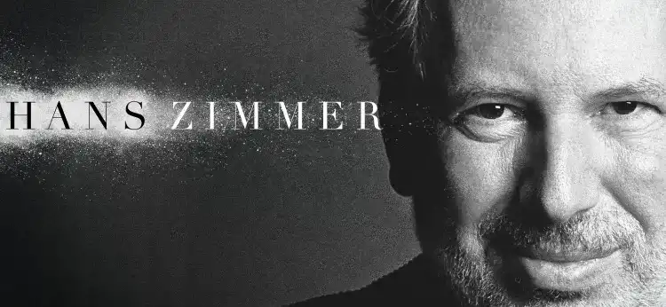

La musique est 1976 qui a été composée par Hans Zimmer, elle fait partie de la bande originale du film Rush de Ron Howard. La musique pour ce film est très complémentaire avec les actions et les moments du film, on voit directement que les musiques ont été directement composés pour renforcer les émotions et les moments que voulaient transmettre aux spectateurs le réalisateur Ron Howard. Les musiques sont à la fois puissante et émotionnelle et elles contribuent à créer une atmosphère immersive pour le film. Le thème principal du film s'appelle Lost but Won est comme toutes les compositions de Hans Zimmer très vite mémorable avec des rythmes entraînants et des mélodies épiques. Les musiques de Hans Zimmer montrent une dimension supplémentaire à l'histoire des personnages principaux en soulignant leur défaites et leurs victoires mais aussi les triomphes et les tragédies. Hans Zimmer a collaboré avec Ron Howard pour d'autres films comme Anges et Démons ou Le Da Vinci Code et Inferno. La collaboration avec Ron Howard est la fructueuse de sa carrière, et la musique de Hans Zimmer est une partie du succès des films de Ron Howard.
Ron HowardConférence avec Ron Howard et Hans Zimmer
Qui est Hans Zimmer ?
Hans Zimmer est né le 12 Septembre 1957 à Francfort en Allemagne et est l’un des compositeurs de musique de film les plus renommés et talentueux de notre époque. Hans Zimmer a commencé sa carrière dans la musique dans les années 70, il était membre de plusieurs groupes de rock puis s’est tourné vers la composition de musique dans les années 80, depuis il a composé les bandes originales de plus de 150 films. Il a rapidement acquis une renommée internationale en effectuant les B.O des films comme Rain Man en 1988, Gladiator en 2000 et Inception en 2010. Il a reçu un Oscar de la meilleure musique de film pour la musique du Roi Lion sortie en 1994. Il a également gagné 4 Grammy Awards, deux Golden Globes et un BAFTA. En plus de la composition de la musique de film, il a composé pour la télévision, des jeux vidéo et des concerts. Il a également travaillé avec d'autres réalisateurs connus comme Ridley Scott ou Christopher Nolan.
Affiche de la tournée de Hans ZImmer